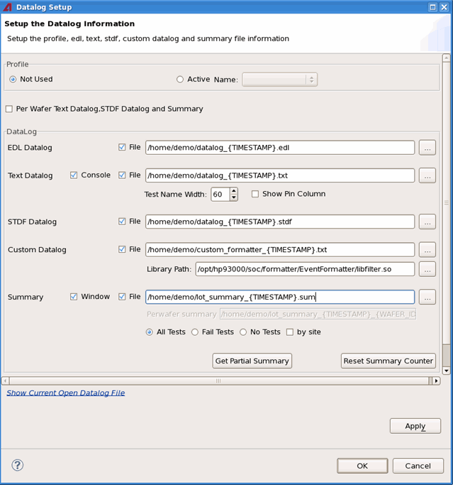

Setting up the data log information
The Datalog Setup dialog provides a central place to configure the data log related settings. It allows to select the data log profile, specify the output data log files and control the generation of the lot summary file.
About this task

To generate the text data log file, set the system flag log_events_enable to on. The flag is set to on by default when you create a new testflow.
To generate the STDF data log file, set the system flag log_events_enable to on. The flag is set to on by default when you create a new testflow.
If you use Data Logging Profiles, the settings in the data logging profile will have higher priority than the settings in the testflow.
If the correct setting of log_events_enable does not generate the STDF file correctly, check the setting of formatter.stdf.generateStdf in the configuration file global.conf and the setting of generateDetailedFile and generateSummaryFile in the configuration file main.formatter.conf.
In the naming of the data logging files and the lot summary files, you can use the following variables in a pair of braces to specify the name and path of the output data log file or lot summary file. In the real name of the files, they will be replaced by the value of the variables at that moment.
- The variables related to lot information, including PART_TYP, TST_TEMP, TEST_COD, LOT_ID and OPER_NAM
- The system variables, including HOSTNAME, USER and LOGNAME
- Others: DEVICE_PATH, DEVICE_NAME, TESTFLOW_NAME and TIMESTAMP
- All the variables defined in the
/etc/opt/h93000/tcct/newlotuiconfiguration.xml fileNote DEVICE_PATH can only be used to specify the path of the files and cannot be used to specify the name of the files.
Before you begin
Start TCCT and the Datalog Setup dialog.
Procedure
Functional changes
- Introduced in SmarTest 7.2.0
- SmarTest 7.2.0: in patch 2, supports per wafer lot summary file in TCCT 1.1
- SmarTest 7.2.1: New option Test Name Width and Show Pin Column to control the text data log files in TCCT 1.3
- SmarTest 7.2.1: All the variables defined in the newlotuiconfiguration.xml file can be used in the data log file name in TCCT 1.3
- SmarTest 7.2.2: Supports logging the EDL data log file in TCCT 1.4
- SmarTest 7.2.2: Supports logging the content with customized data log formatter in TCCT 1.4
- SmarTest 7.4.5: Removed stdf_generation flag